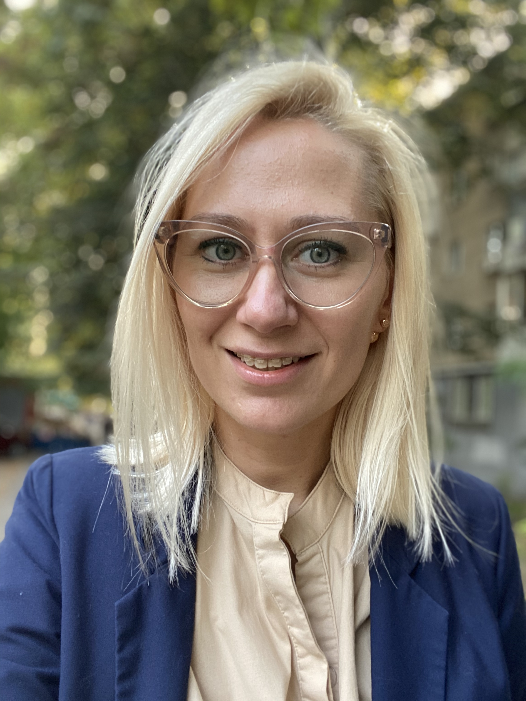

Каменная Марина Junior QA
Привет, меня зовут Марина, и я с удовольствием стану частью вашей команды в Одессе, в качестве Junior QA.
Имею опыт тестирования веб-приложений с помощью тестирования API (Postman).
Выполняла все виды тестирования (статическое и динамическе) так же в наличии опыт работы со всеми типами тестовой документации.

Контакты
Телефон 8(063)133-07-11
Email marinastoneqa@gmail.com
Instagram www.instagram.com
LinkedIN www.linkedin.com
Tech скилы
- HTML5&CSS
- GIT
- SQL
- Postman
- Jira, Trello, TestRail, CRM
Soft скилы
- English (intermediate)
- Румынский (элементарный)
- Selfeducation
- Agile
- Scram
- Комуникабельность
- Работа в команде
Опыт работы
Afenex Личный помощник
Октябрь 2018 - Ноябрь 2019
- Все офисные обязаности (звонки, почта) поддержание его жизнедеятельности
- Организация встреч и поездок
- Ведение графика
Визажист Фрилансер
Декабрь 2015 - Март 2018
Ukrticket Театральный кассир
Ноябрь 2013 - Октябрь 2015
- Увеличение количества постоянных клиентов
- Информирование и продажа билетов на все культурныеи спортивные мероприятия города, а так же продажа авиа и жд билетов
- Прием наличных и ведение учета денежных средств
"Своё Такси" Диспетчер такси
Сентябрь 2008 - Октябрь 2013
- Спустя два месяца стала главным Диспетчером
- Поддержание существующей и увеличение базы клиентов
- Предоставление справочной информации о ценах, ассортименте и условиях заказа такси
- Ведение приема заказов
Образование
Одесский Национальный Университет
Сентябрь 2006 - Июнь 2014 Магистр Социологических наук
Hillel IT школа
Август 2019- Декабрь 2019
Практика для QA. API для QA(Postman)
Апрель 2019 - Июнь 2019
BeetRoot Academy
Октябрь 2020 - в процессе